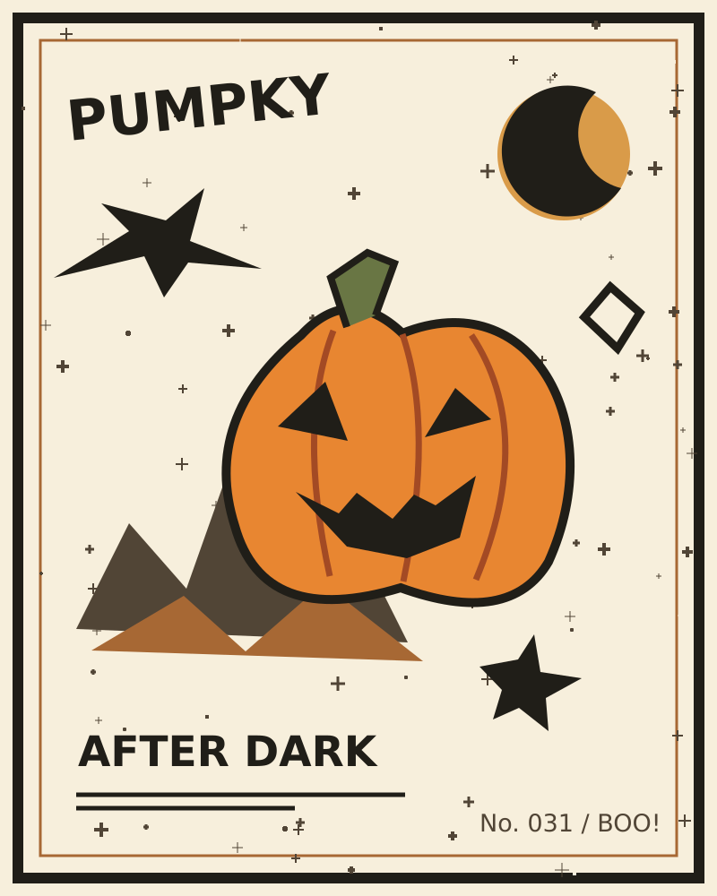

Print at 100% / actual size. Disable fit-to-page. The entire image must measure 80 mm wide × 100 mm tall. Cut around its outside edge and mount flat on a rigid matte card. Fix it to the front centre of the basket; do not wrap or let it swing.
Start in bright, even light, close enough that the badge fills about a third of the view. This target is an experimental candidate; tracking quality still needs an iPhone test.
